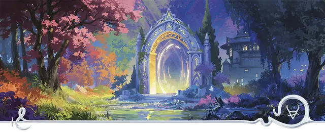

Посвящённый Плетущих горизонты
Horizon Weaver Initiate

Характеристики Ловкость, Телосложение, Мудрость
Черта Портальный прыгун
Навыки Акробатика, Выживание
Инструменты Инструменты ткача
Снаряжение Выберите А или Б: (А) Короткий лук, 20 Стрелы, Инструменты ткача, Карта, Колчан, Верёвка, Дорожная одежда, 18 ЗМ; или (Б) 50 ЗМ
В юности вас терзала неутолимая жажда путешествий. Вы покинули дом и отправились в путь, как только появилась такая возможность. В ваших странствиях вы встретились с ищущими приключений призывателями из Плетущих горизонты, и для расширения горизонтов ваших исследований они научили вас части своей магии телепортации.